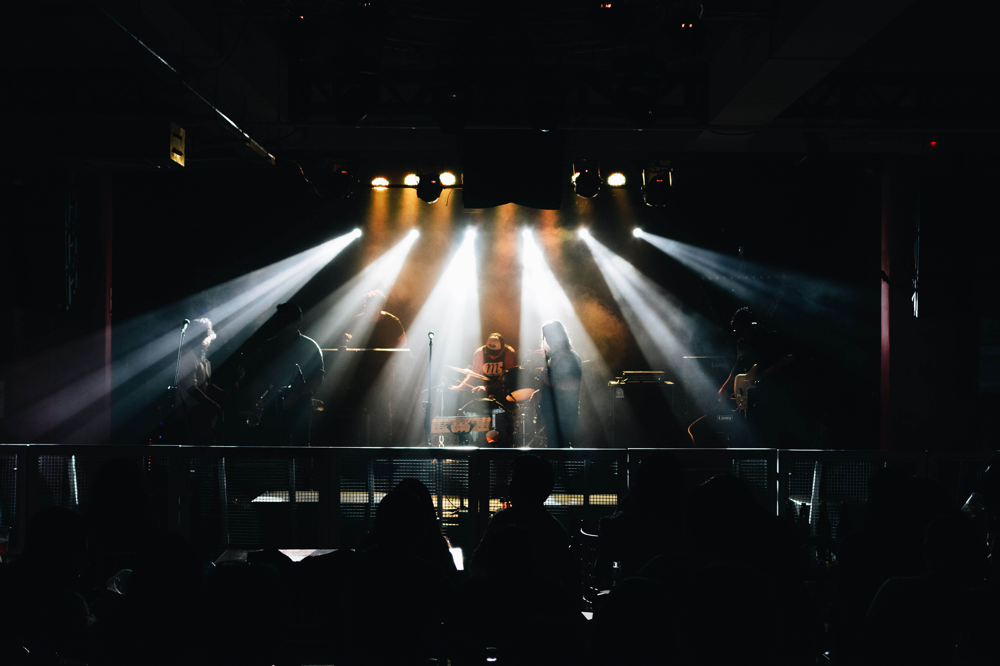
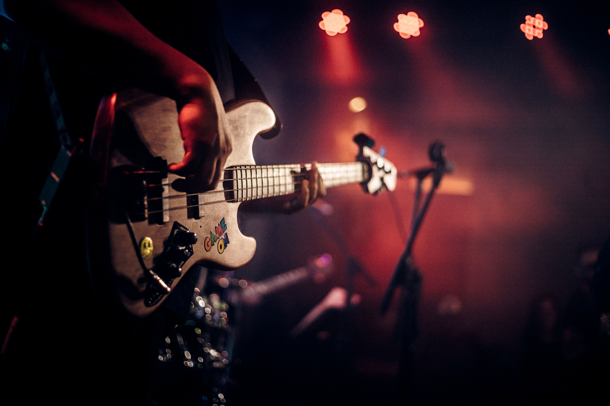
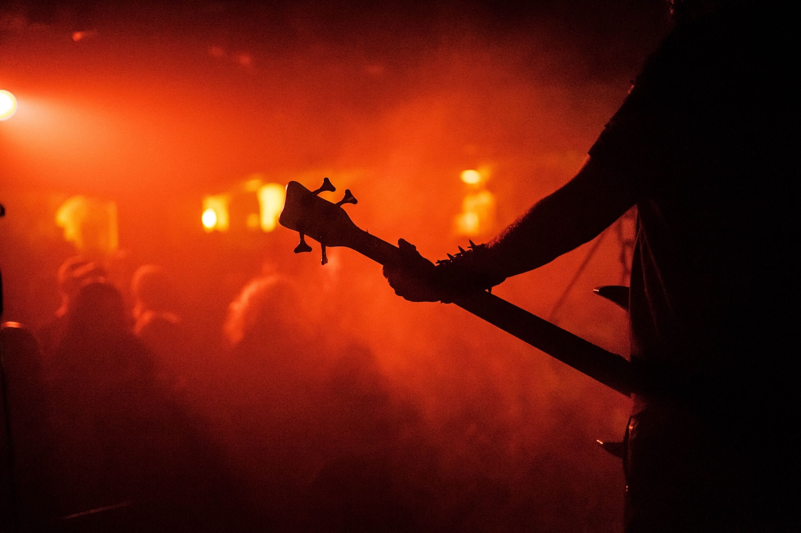
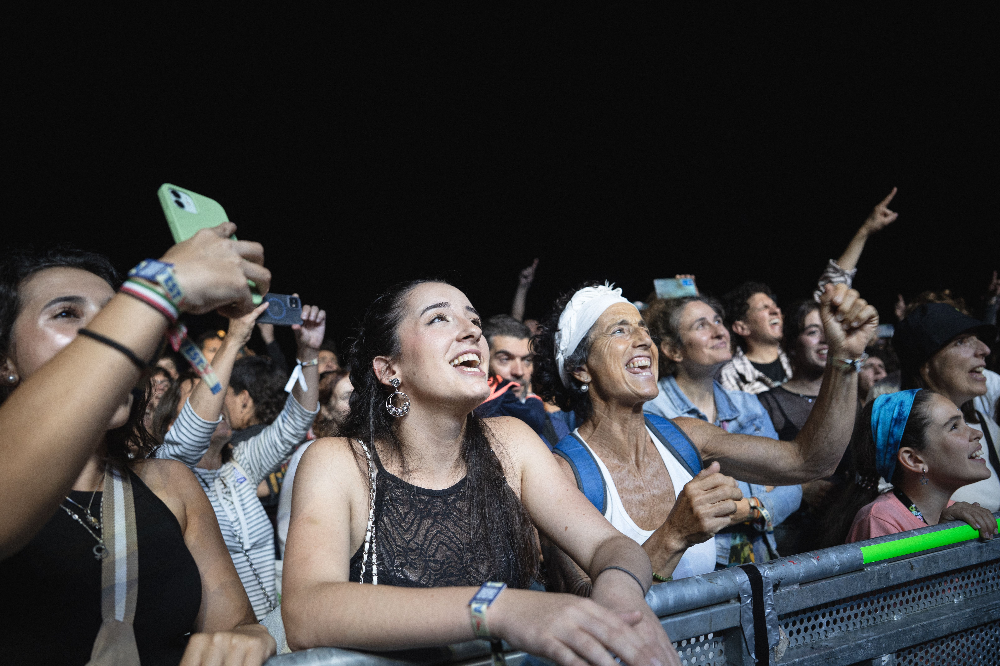
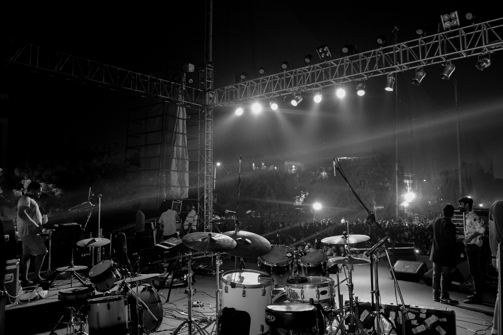
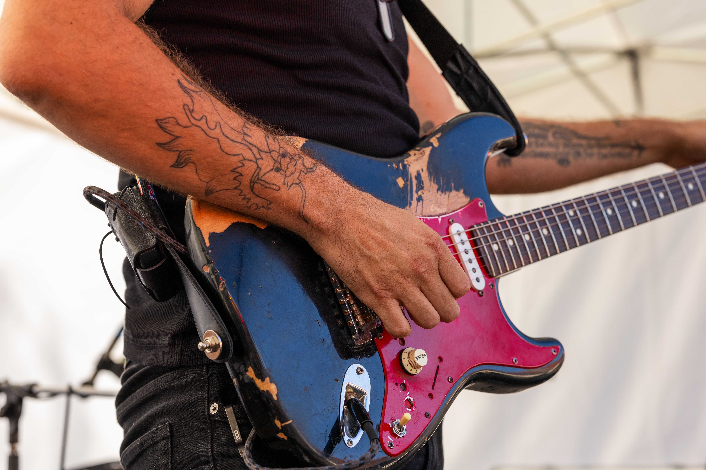

Award Winning Indie Rock/Alternative Band
Halcyon started with a shared love of alternative music and the idea that the best songs are the ones that stay with you long
after they've ended. We're an indie rock band writing music inspired by late-night drives, coastal landscapes, crowded venues,
and the moments that somehow feel both fleeting and unforgettable.
Our sound blends textured guitars, melodic hooks, and dynamic performances with lyrics that explore change, nostalgia, hope, and
everything in between. We love music that feels cinematic but remains grounded in honest songwriting, and that's the approach we
bring to every rehearsal, recording session, and live show.
Whether you've seen us live, stumbled across one of our tracks
online, or you're discovering us for the first time, we're glad you're here. This site is where you'll find our latest music,
upcoming gigs, merchandise, news, and ways to stay connected as we continue to grow.
Thanks for supporting us, we hope to see you at one of our upcoming shows soon.
In the meantime, why not check out some photos from our previous
concerts below!





